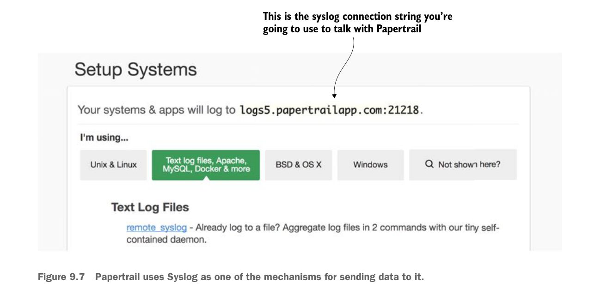

Mặc định, Papertrail cho phép bạn gửi dữ liệu log tới nó thông qua lời gọi Syslog (https://en.wikipedia.org/wiki/Syslog). Syslog là định dạng thông báo log bắt nguồn từ UNIX. Syslog cho phép gửi thông báo log qua cả TCP và UDP. Papertrail sẽ tự động định nghĩa một cổng Syslog mà bạn có thể dùng để ghi thông báo log.
Với mục đích thảo luận trong phần này, bạn sẽ dùng cổng mặc định này. Hình 9.7 cho thấy chuỗi kết nối Syslog được tạo tự động khi bạn bấm vào nút “Add your first system” được minh họa ở hình 9.6.

Papertrail dùng Syslog như một trong các cơ chế để gửi dữ liệu tới nó.
Lúc này bạn đã thiết lập xong Papertrail. Bạn cần cấu hình môi trường Docker để thu thập đầu ra từ từng container đang chạy các dịch vụ của bạn tới endpoint syslog từ xa được định nghĩa ở hình 9.7.
9.2.3 Chuyển hướng đầu ra Docker đến Papertrail
Thông thường, nếu bạn chạy từng dịch vụ trong máy ảo riêng, bạn phải cấu hình logging của từng dịch vụ để gửi thông tin log tới một endpoint syslog từ xa (như endpoint được cung cấp qua Papertrail).
May mắn là, Docker giúp việc thu thập toàn bộ đầu ra từ bất kỳ container Docker nào đang chạy trên máy vật lý hay máy ảo trở nên vô cùng dễ dàng. Docker daemon giao tiếp với tất cả các container Docker mà nó quản lý thông qua socket Unix có tên docker.sock. Mọi container đang chạy trên máy chủ nơi Docker đang chạy